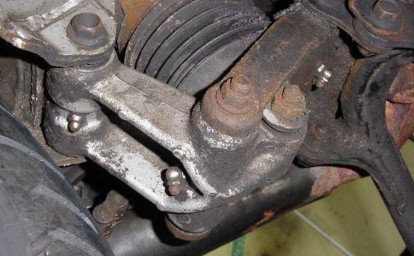

Rear Shock Linkage
I have installed grease nipples in the link and arm of the rear suspension to aid maintenance and avoid the tedium of stripping it all out just to apply some grease. The photo shows the location of the three nipples – two on the Link and one on the Arm. This leaves one of the shafts without easy lubrication, but it is the easiest to disassemble and manually grease, and could possibly be fitted with a nipple with a more complex operation.

The grease nipples installed in the suspension linkage
The most important part of the installation is to decide the position and alignment of the nipples so that a grease gun can reach the nipple with the bike on its centre stand. I use a conventional grease gun with the body in line with the spout and a 20-degree crank on the end connector.
Two of the nipples are right-angled. This gives extra clearance but takes a chance that the connection will point in the right direction after it is tightened. There is some adjustment available as the nipple tightens in its thread, but if I remember correctly it is a tapered one so backing off is not possible. For this reason straight nipples are preferable. I used 6mm thread nipples, since I already had a corresponding tap useful elsewhere on the bike, requiring a 5mm drill.
The usual process of drill, tap, clean, fit is all that is needed, but do it with the components disassembled and clean so that swarf can be fully removed from the inside of the bearing. On these three locations there is a gap in the middle between the bushes so internal clearance is not a problem, but just make sure on your installation just in case the nipple sticks too far into the bore.
The pivot at the foot of the shock without a nipple has a continuous bush from left through to the right so any drilling would need to be deburred on the inside – I chickened out of this but more competent mechanics should be able to do the additional work.
I was inspired to do this when I found the bushes are non-replaceable and the link and arm are over £100 GBP each!!
When you use the grease gun wipe off the expelled grease from the ends of the bushes – otherwise it gets all over the tyre and rear end.
Swingarm pivot
A similar installation is possible on the rear swingarm, as shown in the picture.
In the centre of the swingarm tube, you can see the grease nipple
The specific detail of this one is that the nipple needs a thin nut screwed tightly onto the thread before the nipple is inserted into the swingarm cross-tube. This is because there is little clearance inside the tube to the pivot collar, and the inside end cannot be filed down without losing the one-way ball valve. If you look closely at the picture you can see the nut inside the grease that tends to seep out due to difficulty of sealing the nipple in its thread. Check your specific assembly for clearance between the nipple end and the collar shaft.
This one was inspired by the cost in cash and time to replace the swingarm bearings – an early job when I first got the bike.